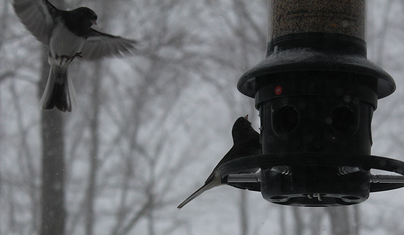
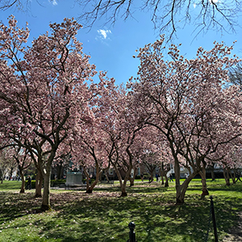
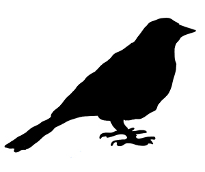

Birdwatching is how you think.
In Flight explores how birds are seen, misunderstood, and valued.
Birds are everywhere, but people do not always notice them in the same way. In Flight explores how perception, ecology, and everyday observation shape the way birds are understood. Through pictorials, reviews, maps, and features, the site highlights birding locations across Rutgers and encourages viewers to slow down and look more closely.
Explore the Site
Explore Campus Birding Spots

Find beginner-friendly birdwatching areas on Livingston, Busch, College Ave, and Cook/Douglass.
Learn What to Look For

Use pictorial guides to recognize common birds, habitats, and signs of activity around campus.
Take a look at our beginner's guide

Follow routes, compare locations, and choose a birding spot based on time, scenery, and accessibility.